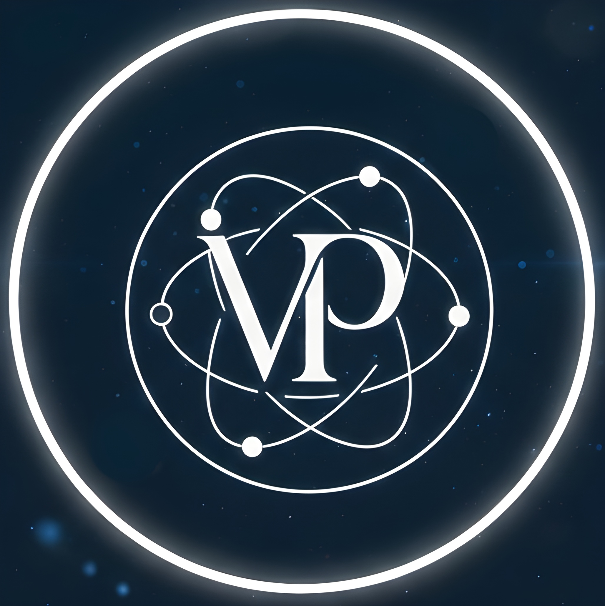
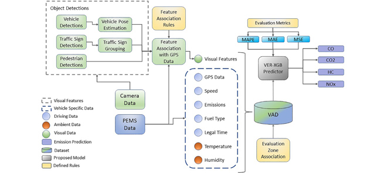
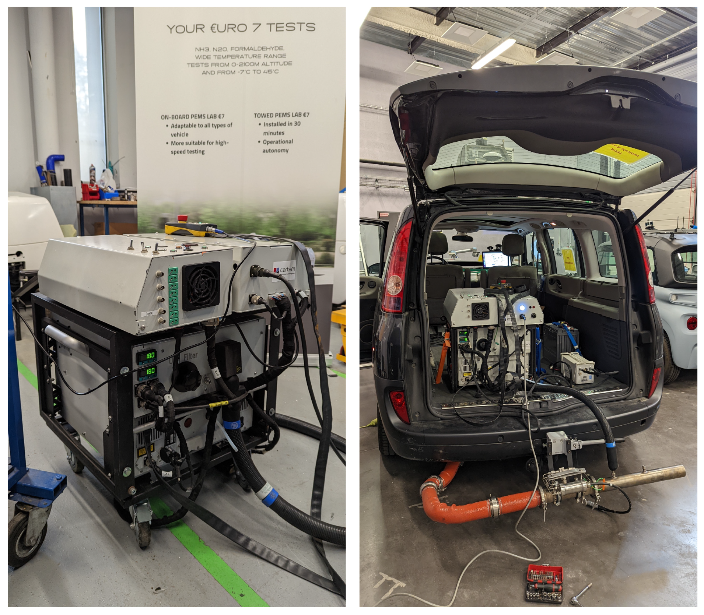
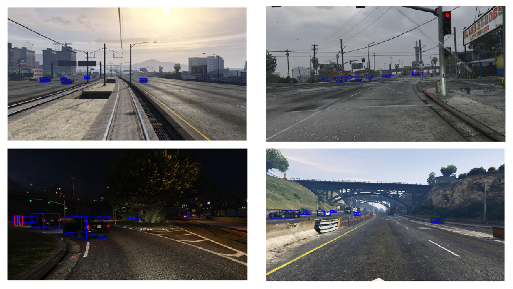
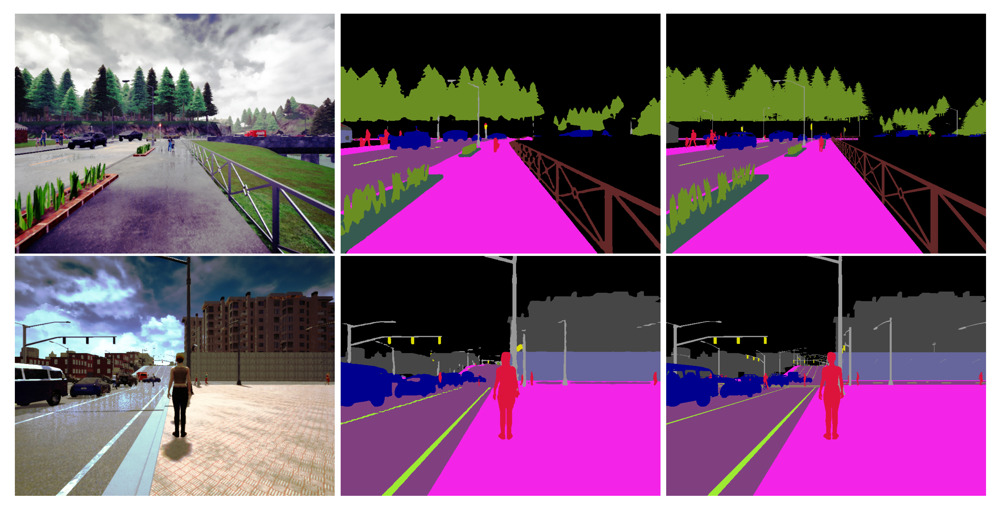
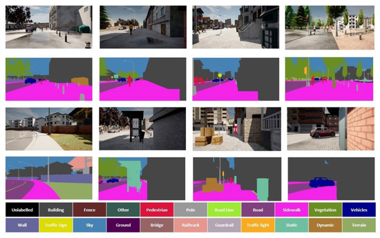

An experienced research engineer specializing in sensor perception and AI, with a strong foundation in computer vision, deep learning, and data engineering. Over the past years, I have built expertise in both algorithm development and system-level understanding of ADAS/AD functions, with hands-on camera-based development for automotive and robotic use cases. I’m excited by new interactive features that help customers feel more connected to their vehicles. I’m always fully on board with ideas that enhance the overall user experience. I aim to apply domain expertise in developing such robust, scalable solutions for product leadership and to #transform_automotive_mobility.
Data analysis, Scientific computing, Machine learning evaluation, Computer vision workflows, Automation and scripting, Explainable AI, Large-Scale Video Analytics.
PyTorch, TensorFlow, OpenCV, CUDA, ROS.
Docker, Kubernetes, Git, BitBucket, Cloud & On-Premises Platforms.
Camera, LiDAR, GPS/D-GPS, ARM Cortex, NVIDIA architectures, PCB Health Management.

Visual Eco-Routing (VER): XGBoost Based Eco-Route Selection From Road Scenes and Vehicle EmissionsThis research introduces a novel visual eco-routing framework that leverages XGBoost for optimal route selection. By analyzing road scenes alongside real-time vehicle emissions, the model predicts energy-efficient trajectories. It bridges the gap between computer vision and environmental sustainability in automotive navigation. The proposed methodology demonstrates significant improvements in reducing fuel consumption and emissions during active fleet operations.

Vehicle Activity Dataset: A Multimodal Dataset to Understand Vehicle Emissions with Road Scenes for Eco-RoutingThis paper presents a comprehensive multimodal dataset designed specifically for advanced eco-routing applications. It combines high-resolution road scene imagery with synchronized vehicle telemetry and emission metrics. The dataset provides researchers with robust ground-truth data to train advanced machine learning models. By linking visual contexts to fuel efficiency, it serves as a foundational tool for developing greener autonomous mobility solutions.

Road and Railway Smart Mobility: A High-Definition Ground Truth Hybrid Dataset (Acknowledged)This work contributes a high-definition hybrid dataset encompassing both complex road and railway mobility scenarios. It features meticulously annotated ground-truth data to support the training of diverse perception algorithms. The dataset addresses complex environmental conditions and multi-agent interactions within smart mobility ecosystems. Consequently, it accelerates the development of reliable sensor fusion and semantic understanding systems for intelligent transport.

A Dataset for Temporal Semantic Segmentation Dedicated to Smart Mobility of Wheelchairs on SidewalksFocusing on micro-mobility and accessibility, this paper introduces a specialized temporal dataset for wheelchair navigation. It captures dynamic sidewalk environments to train and evaluate temporal semantic segmentation models. The annotated data helps algorithms anticipate pedestrian movements and navigate complex urban obstacles safely. Ultimately, this research empowers robotic wheelchairs with enhanced situational awareness and autonomous path planning capabilities.

Self-Supervised Sidewalk Perception Using Fast Video Semantic Segmentation for Robotic Wheelchairs in Smart MobilityThis study details a robust self-supervised approach to sidewalk perception for autonomous robotic wheelchairs. It employs fast video semantic segmentation to process real-time visual data efficiently on embedded systems. By eliminating the need for exhaustive manual annotations, the model adapts dynamically to novel urban environments. The proposed architecture ensures safe, responsive, and robust navigation for users in evolving smart mobility contexts.